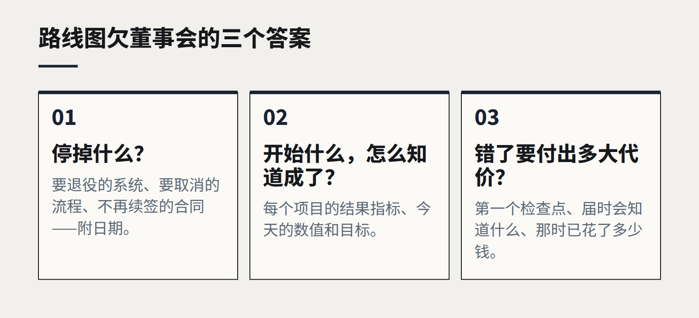

一份技术路线图欠董事会什么
路线图在值得汇报之前，必须回答三个问题：停掉什么、开始什么、以及错了要付出多大代价。
提交给董事会的技术路线图，多数是一张清单。十二个项目，按季度涂上颜色，每个都有一个自信的名字和一行预算。董事们点点头，问一个关于网络安全的问题，然后批准。十八个月后，四个项目完成，三个“进行中”，没人说得清企业是否因此变得更好。
路线图不是技术部门想做的事情清单，而是关于企业将如何改变的一个论证，董事会有权检验这个论证。以我们的经验，一份路线图只有清楚回答了下面三个问题，才配占用董事会的议程。
1. 停掉什么？
每个组织能吸收的变化都是有限的。新系统需要培训、迁移、测试，还需要占用正在维护旧系统的同一小群人的精力。一份只增加工作的路线图，终将悄无声息地失败。
所以第一页应该列出企业将因此停止做的事、停止付费的东西、停止维护的系统：要退役的系统及日期；要取消的手工流程；不再续签的合同。如果什么都不停，这份计划要么低估了工作量，要么根本负担不起。

2. 开始什么，又怎么知道它成了？
对每个项目，董事会应该看到它要改变的结果、这个结果今天的数值，以及预期达到的水平。“上线新 CRM”不是结果，“把从询价到报价的时间从九天缩短到三天”才是。
这样做有两个作用：让董事会依据价值而不是热情来排序；并且让一年后判断哪些项目有效成为可能。没有衡量标准的路线图无法复盘，只能被再汇报一次。
3. 错了要付出多大代价？
每个计划都建立在假设之上：供应商会按时交付、员工会接受新流程、数据比看上去干净。董事会的职责不是消除这些风险，而是弄清风险在哪里、代价有多高。
对每个重大项目，路线图应当说明第一个检查点是什么、届时会知道什么、那时已经花了多少钱。好的计划会把昂贵的承诺放在不确定的问题得到回答之后。一个三年期项目，第一次真正的检验却在第二年，那是包装成计划的一场赌博。
董事会应该要求什么
- 一页纸：开始什么、停掉什么、这一切为了什么。
- 每个项目都有衡量标准，并写明今天的数值。
- 超过一定预算的项目，前九十天内必须有检查点。
- 决策权：谁可以叫停一个不奏效的项目，依据什么证据。
这些都不需要董事具备技术专长，只需要他们用对待任何其他资本决策的同样纪律来对待它。技术并不特殊，只是常常被包装得好像很特殊。